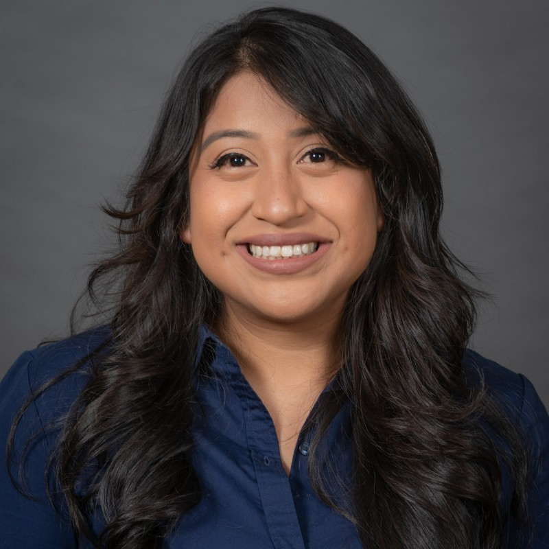

Reyna de los Ángeles Hernández
LinkedIn
| GitHub
| UIowa

About Me
I am a proud, 1st generation daughter of two Mexican parents,
Brigida Luis Vasquez and Fransisco Almaraz Hernandez. My parents
migrated to California in the late 1980's to pursue the American
Dream. My mother gave up her promising career as a well-respected
teacher so that her two children, at the time, could have a better
life. My parents raised, supported, and saw that all their 5 children
graduated high school and went on to venture their own career paths.
I am the 4th child, the second US born citizen, to Brigida and
Francisco Hernandez, and I am happy to share my history with you all.
Education
- University of Iowa (UI)
Masters in Biostatistics
(2020-2022)
- California State University, San Bernardino (CSUSB)
Bachelors in Mathematics
(2010-2014)
Mathematics Teaching Credential
(2015-2016)
- AB Miller High School
High School Diploma
(2006-2010)
My dad was able to see me walk down the stage and receive mydiploma
from CSUSB before he passed in 2016 -- a luxury that I do not take
for granted.